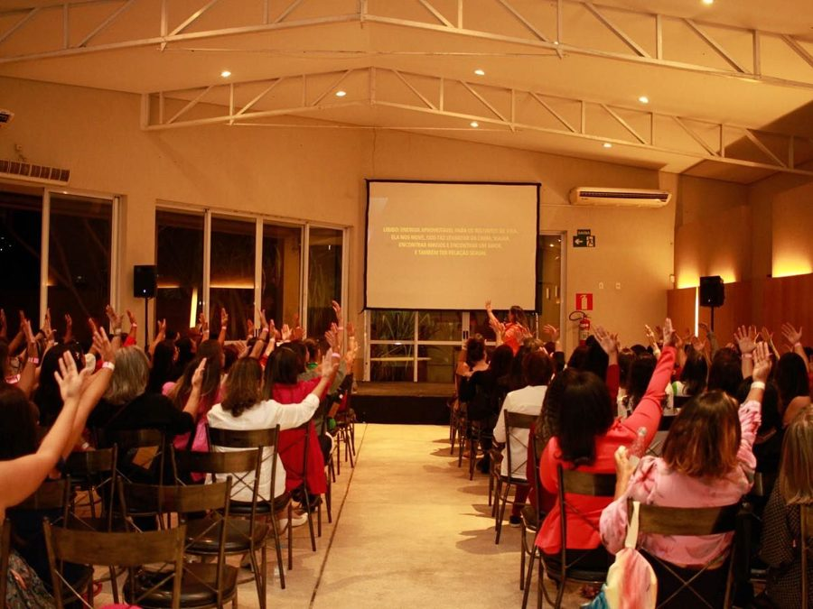
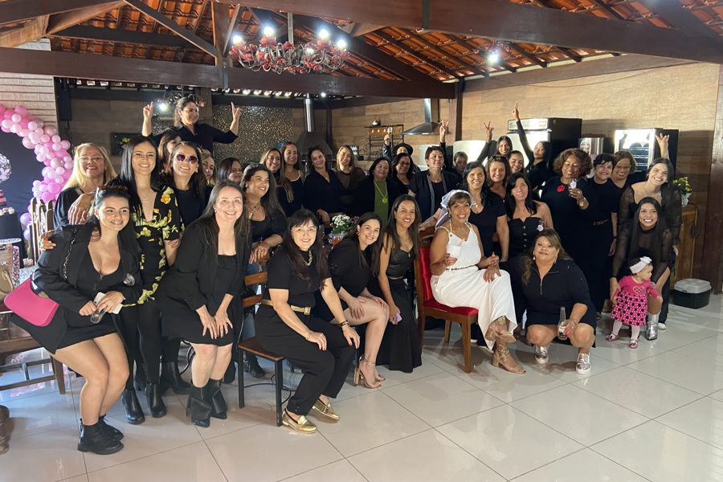

Informação sexual segura, sem tabu, pra você e pra sua família
Sessão individual com sexóloga — pra você se informar sem vergonha, e pra aprender a conversar sobre sexualidade com seus filhos do jeito certo.
Ninguém te ensinou como falar sobre isso
Seu filho pergunta e você não sabe o que responder. Ou você cresceu sem nenhuma educação sexual de verdade, e carrega dúvidas e vergonha até hoje.
Não é falta de capacidade — é falta de informação segura. A maioria de nós nunca teve isso, nem na escola, nem em casa.
Resolver isso “no improviso” só adia o problema: os filhos acabam aprendendo com fontes erradas, e a vergonha continua passando de geração em geração.
- suas próprias dúvidas
- as perguntas do seu filho
- a idade certa pra cada conversa
- sem vergonha, sem tabu
Informação de quem entende — pra você e pra sua família
A sessão com a Istaela serve pra duas coisas ao mesmo tempo: te informar sem vergonha, e preparar você pra conversar com seus filhos.
Informação confiável
Nada de achismo de internet — orientação de uma sexóloga, adaptada pra sua realidade.
Resposta certa pra idade dele
Orientação calibrada pro momento do seu filho — nem cedo, nem tarde demais.
Menos vergonha, mais clareza
Um espaço seguro pra tirar as dúvidas que você nunca teve coragem de perguntar.
Família mais próxima
Diálogo aberto sobre um tema essencial, sem constrangimento entre vocês.
Uma conversa segura, no seu ritmo
A sessão é individual — só você e a Istaela, presencial ou online. Sem pergunta boba, sem tema proibido.
-
01
Você chega com suas dúvidas
As suas, ou as que seu filho já trouxe pra você. Não existe pergunta boba nem tema proibido aqui.
-
02
Orientação clara, sem tabu
Explicações diretas, sem jargão nem julgamento — adaptadas pra sua situação e pra idade do seu filho.
-
03
Você sai com o que aplicar
Informação clara pra você, e um caminho concreto pra conversar com sua família sobre o assunto.
“Não é conteúdo genérico de internet. É orientação de uma sexóloga, adaptada pra sua realidade.”
Istaela Santos | Sexóloga
Minha jornada começou dentro de uma loja de lingerie e produtos sensuais. Foi conversando com cada cliente que entendi: o que faltava não era produto — era conhecimento.
Minha abordagem é profissional, profunda e sempre respeitosa. Falar sobre sexualidade é falar sobre saúde, autoconhecimento e qualidade de vida.
- 800+
- eventos femininos realizados
- 5.000+
- mulheres impactadas diretamente
- CBSH 2024
- Congresso Brasileiro de Sexualidade Humana
Formação
- Especialização em Sexologia
- Especialização em Terapia Sexual
- Especialização em Comportamento Humano
- Formação em Recursos Humanos
- Certificação em Programação Neurolinguística (PNL)
- Certificação em Prevenção à Pedofilia e Abuso Infantil — Academia de Polícia Civil
Cada sessão é individual, presencial ou online, com sigilo garantido do início ao fim.
Congressos, eventos e centenas de conversas reais
Da Jornada Mineira de Sexologia a encontros femininos por todo o país — ciência e prática lado a lado.


A terapia me fez descobrir quem eu sou. Hoje eu consigo controlar meus sentimentos e emoções, sem deixar que isso prejudique minha vida e meus relacionamentos. Voltar e abraçar a menina foi emocionante — agora estou livre pra alcançar meus sonhos e objetivos. Obrigada por me guiar, Istaela.
Perguntas que você pode estar se fazendo
Vou ficar com vergonha de perguntar isso.
O espaço é seguro e sem julgamento — lidar com isso é literalmente o trabalho de uma sexóloga.
Meu filho é muito novo (ou já muito velho) pra esse assunto.
A orientação é adaptada pra idade certa — a sessão ajuda a calibrar exatamente isso.
Não dá pra aprender isso sozinha, pela internet?
Dá pra achar informação solta, mas não confiável nem personalizada pra sua situação. A sessão resolve isso com uma profissional de verdade.
É presencial ou online?
Os dois — você escolhe o formato que fizer mais sentido pra você.
Comece essa conversa com segurança
Você não precisa ter todas as respostas sozinha. Uma sessão com quem entende do assunto muda a conversa — com você mesma, e com sua família.
Agendar sessão — R$180